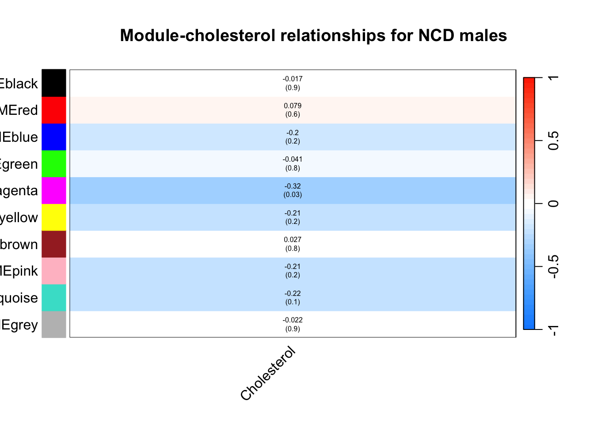
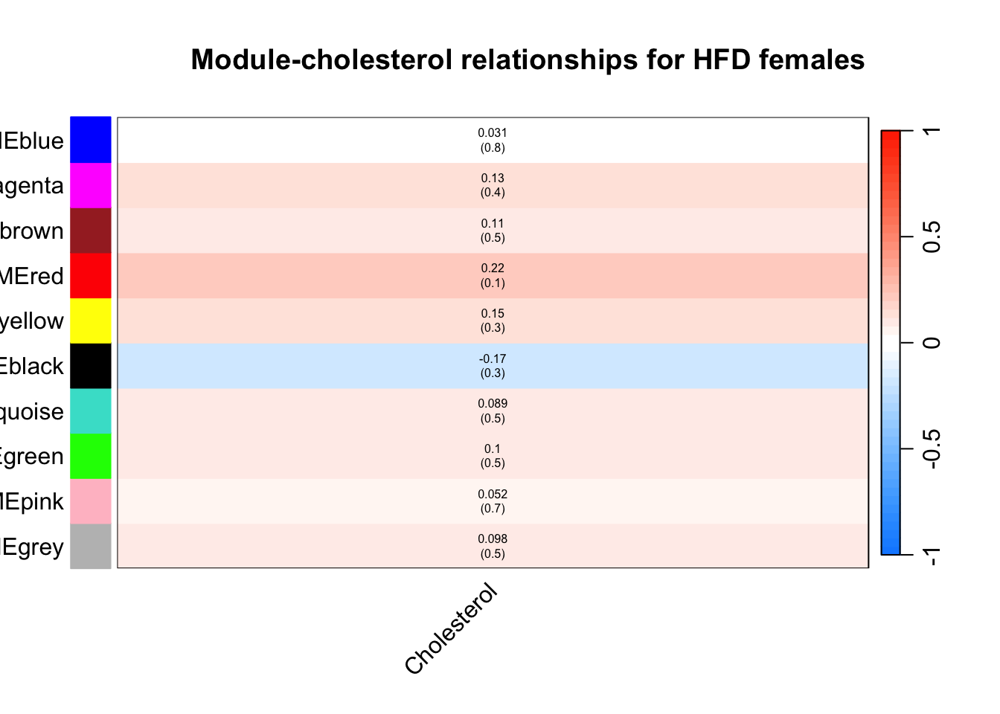

load("ncd_hf_wcgna_networks.RData")
library(WGCNA)WGCNA Analysis of DO Livers
Followed instructions on https://horvath.genetics.ucla.edu/html/CoexpressionNetwork/Rpackages/WGCNA/Tutorials/, which was based on the method used in https://doi.org/10.1371/journal.pgen.0020130
Input
Wrote this out to read in in the script Liver-WGCNA-Construction.Qmd
Analysis of Constructed Network
table(net$colors) %>%
kable(caption="Genes per module (0 indicates unassigned")| Var1 | Freq |
|---|---|
| 0 | 17706 |
| 1 | 3392 |
| 2 | 270 |
| 3 | 84 |
Integation with Cholesterol Data
MEs0.ncd <- moduleEigengenes(expr=multiExpr[[1]]$data,
colors=moduleColors)$eigengenes
MEs0.hf <- moduleEigengenes(expr=multiExpr[[2]]$data,
colors=moduleColors)$eigengenes
MEs.ncd=orderMEs(MEs0.ncd)
MEs.hf=orderMEs(MEs0.hf)
#correlate eigengenes with cholesterol levels for ncd
moduleTraitCor.ncd <-cor(MEs.ncd,
phenotype.data[rownames(MEs.ncd),'chol2'],
use="p",
method="spearman")
moduleTraitPvalue.ncd <- corPvalueStudent(moduleTraitCor.ncd,nSamples)
#correlate eigengenes with cholesterol levels for hfd
moduleTraitCor.hf <-cor(MEs.hf,
phenotype.data[rownames(MEs.hf),'chol2'],
use="p",
method="spearman")
moduleTraitPvalue.hf=corPvalueStudent(moduleTraitCor.hf,nSamples)
#Will display correlations and their p-values
textMatrix.ncd <- paste(signif(moduleTraitCor.ncd,2),
"\n(",signif(moduleTraitPvalue.ncd,1),")",
sep="")
textMatrix.hf <- paste(signif(moduleTraitCor.hf,2),
"\n(",signif(moduleTraitPvalue.hf,1),")",
sep="")
dim(textMatrix.ncd) <- dim(moduleTraitCor.ncd)
dim(textMatrix.hf) <- dim(moduleTraitCor.hf)
#Display the correlation values within a heatmap plot
labeledHeatmap(Matrix=moduleTraitCor.hf,
xLabels='Cholesterol',
yLabels=names(MEs.hf),
ySymbols=names(MEs.hf),
colorLabels=FALSE,
colors=greenWhiteRed(50),
textMatrix=textMatrix.hf,
setStdMargins=FALSE,
cex.text=0.5,
zlim=c(-1,1),
main=paste("Module-cholesterol relationships for HFD"))
labeledHeatmap(Matrix=moduleTraitCor.ncd,
xLabels='Cholesterol',
yLabels=names(MEs.ncd),
ySymbols=names(MEs.ncd),
colorLabels=FALSE,
colors=greenWhiteRed(50),
textMatrix=textMatrix.ncd,
setStdMargins=FALSE,
cex.text=0.5,
zlim=c(-1,1),
main=paste("Module-cholesterol relationships for NCD"))
labeledHeatmap(Matrix=cbind(moduleTraitCor.ncd,moduleTraitCor.hf),
xLabels=c("NCD","HFHS"),
yLabels=names(MEs.ncd),
ySymbols=names(MEs.ncd),
colorLabels=FALSE,
colors=greenWhiteRed(50),
textMatrix=cbind(textMatrix.ncd,textMatrix.hf),
setStdMargins=FALSE,
cex.text=0.6,
cex.lab.y=0.4,
zlim=c(-1,1),
main=paste("Module-cholesterol relationships"))
geneModuleMembership.ncd <- as.data.frame(
cor(
phenotype.data[rownames(MEs.ncd),'chol2'],
MEs.ncd,
use="a",
method="spearman"))
MMPvalue <- as.data.frame(
corPvalueStudent(
as.matrix(
geneModuleMembership.ncd),
nSamples[1]))
modNames=substring(names(MEs.ncd),3)
names(geneModuleMembership.ncd) <- paste("MM",modNames,sep="")
names(MMPvalue)=paste("p.MM",modNames,sep="")
geneTraitSignificance <- as.data.frame(
cor(multiExpr[[1]]$data,
phenotype.data[multiExpr[[1]]$data %>% rownames,'chol2'],
use="p",
method="spearman"))
GSPvalue <- as.data.frame(
corPvalueStudent(
as.matrix(geneTraitSignificance),nSamples[1]))
module <- "blue"
column <- match(module,modNames)
moduleGenes <- moduleColors==module
#stuck on verbose scatter plotSession Information
sessionInfo()R version 4.2.2 (2022-10-31)
Platform: x86_64-apple-darwin17.0 (64-bit)
Running under: macOS Big Sur ... 10.16
Matrix products: default
BLAS: /Library/Frameworks/R.framework/Versions/4.2/Resources/lib/libRblas.0.dylib
LAPACK: /Library/Frameworks/R.framework/Versions/4.2/Resources/lib/libRlapack.dylib
locale:
[1] en_US.UTF-8/en_US.UTF-8/en_US.UTF-8/C/en_US.UTF-8/en_US.UTF-8
attached base packages:
[1] stats graphics grDevices utils datasets methods base
other attached packages:
[1] WGCNA_1.72-1 fastcluster_1.2.3 dynamicTreeCut_1.63-1
[4] ggplot2_3.4.2 readr_2.1.4 dplyr_1.1.2
[7] tidyr_1.3.0 knitr_1.43
loaded via a namespace (and not attached):
[1] Biobase_2.58.0 httr_1.4.6 bit64_4.0.5
[4] jsonlite_1.8.5 splines_4.2.2 foreach_1.5.2
[7] Formula_1.2-5 stats4_4.2.2 blob_1.2.4
[10] GenomeInfoDbData_1.2.9 impute_1.70.0 yaml_2.3.7
[13] backports_1.4.1 pillar_1.9.0 RSQLite_2.3.1
[16] lattice_0.21-8 glue_1.6.2 digest_0.6.31
[19] checkmate_2.2.0 XVector_0.38.0 colorspace_2.1-0
[22] preprocessCore_1.58.0 htmltools_0.5.5 Matrix_1.5-4.1
[25] pkgconfig_2.0.3 zlibbioc_1.44.0 purrr_1.0.1
[28] GO.db_3.16.0 scales_1.2.1 tzdb_0.4.0
[31] htmlTable_2.4.1 tibble_3.2.1 KEGGREST_1.38.0
[34] generics_0.1.3 IRanges_2.32.0 cachem_1.0.8
[37] withr_2.5.0 nnet_7.3-19 BiocGenerics_0.44.0
[40] cli_3.6.1 survival_3.5-5 magrittr_2.0.3
[43] crayon_1.5.2 memoise_2.0.1 evaluate_0.21
[46] fansi_1.0.4 doParallel_1.0.17 foreign_0.8-84
[49] data.table_1.14.8 tools_4.2.2 hms_1.1.3
[52] lifecycle_1.0.3 matrixStats_1.0.0 stringr_1.5.0
[55] S4Vectors_0.36.2 munsell_0.5.0 cluster_2.1.4
[58] AnnotationDbi_1.60.2 Biostrings_2.66.0 compiler_4.2.2
[61] GenomeInfoDb_1.34.9 rlang_1.1.1 grid_4.2.2
[64] RCurl_1.98-1.12 iterators_1.0.14 rstudioapi_0.14
[67] htmlwidgets_1.6.2 bitops_1.0-7 base64enc_0.1-3
[70] rmarkdown_2.22 gtable_0.3.3 codetools_0.2-19
[73] DBI_1.1.3 R6_2.5.1 gridExtra_2.3
[76] fastmap_1.1.1 bit_4.0.5 utf8_1.2.3
[79] Hmisc_5.1-0 stringi_1.7.12 parallel_4.2.2
[82] Rcpp_1.0.10 vctrs_0.6.2 rpart_4.1.19
[85] png_0.1-8 tidyselect_1.2.0 xfun_0.39